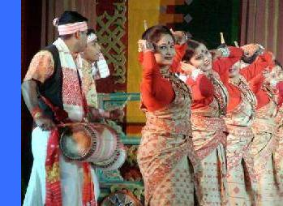

At the age of sixty-five, what is Bihu to me? Is it the first month of the year? Is it the time for merry making? Or a time to witness exciting dances and hear ballad, Chaucer & ribald songs? Leaning on the railing of the Western balcony of my apartment at Deshapriya Park Road I could not find words to describe as to how do I respond to the sound of Rongali Bihu. It is a matter of shame for not being able to express and define the wealth that was inherited by me from my legacy of forefather!
The evening breeze of Bay of Bengal lashed my face, while I stood at the balcony facing the rows of pots of cactus. I became nostalgic suddenly hearing the Bihu songs played by my daughter in her DVD in the next room sent by her Uncle Munin Baruah.Slowly I realised Bihu is nothing but a fresh childlike delight in nature! In the pastoral Bihu songs we get the reflection of life full with happiness and sorrow. It also expresses aspiration, hope and peaceful life of village folks, while reflecting the relations of the nature and human being. The faith on Almighty also occupies a central place. In our youth we really enjoyed the love songs and dances but most of the songs expressed sentimentalism and passion too. The subject matter of the songs was varied from socio -economic matters to spiritual urge to love making episode!
In our part of Assam, where I was raised, Bohag Bihu was not generally celebrated with lots of fun fare. Bhog Bihu was a subdued festival of house hold till Bihutoli of Latashil field was thrown open to public festivities in Gauhati. We started enjoying the life of Rongali Bihu there after only. Before those days in Rongali Bihu we only used to bow down before our parents and used to receive Gamocha woven by our mother at home. Dancing by our sisters was taboo in those days and we were allowed to see only singing of Huchori at our house. We are not allowed to participate. But how time changed. The public celebration of Bohag Bihu has completely changed the atmosphere. We started participating in the drills on the opening day of Bihu under the guidance of Nabin Sharma sir and some of our friends used to participate in sports organized by Pulin Dada and other senior member of our uzanbazar fraternity.
The event of Bihu has been predominantly a sub-national festival to the Assamese and the songs sung there in are national to the core. Though our parents at first thought Bihu dances were matter of vulgar enjoyment of the rural folks but later realized the historic importance of portraying the elementary passion of human nature as found in native simplicity. I remember the remark of Khan Bahadur Sayidur Rahman in an article written in the The Times of Assam dated May 19th 1929 on Bihu, which is worth remembering.
The singing of “HUCHARI” is associated with Rongali Bihu. In the evening of Bihu the youth and middle aged persons signifying community power of “Raij” visit family houses of the well known people for singing Huchari. The term Huchari remains unexplained but essentially it is the blessings of the community through chanting of holy prayers.
Give the king a rupee, my lord,
Give the people a rupee,
We boys are sporting,
Give us too a rupee. (Bohag Bihu of Assam and Bihu Songs, page 36)
After the Huchari songs are sung it is time for Love song of Bihu:
It was God who planted the seedlings of songs
It was Brahma, who tended them,
Forgive me, if unbecoming songs come out
First I sing of love
Now leaning on the railing of the balcony of my house in March, I turned nostalgic of Bihu festival gazing the blooming cactus. Again the question has been knocking at the doors of my mind, what does Bihu means to me now? The Bihu has progressed over the years and has acquired different connotation at different times. Bihu has ceased to be a month only. It has stopped to be a festival where gamochas are exchanged .It is not only springtime festival alone. The Bihu has turned out to be a cultural renascences, partly symbolic of all that is best in Assamese life and also symbolic of the times when we are being conscious of the need for emotional integration- a better understanding among the various section of the population of Northeast and India as a whole. As P D. Goswami pointed out “ We have only to be careful that we don’t lose the zest of life, which is nothing else but a desire to be happy and to work for general happiness.”
